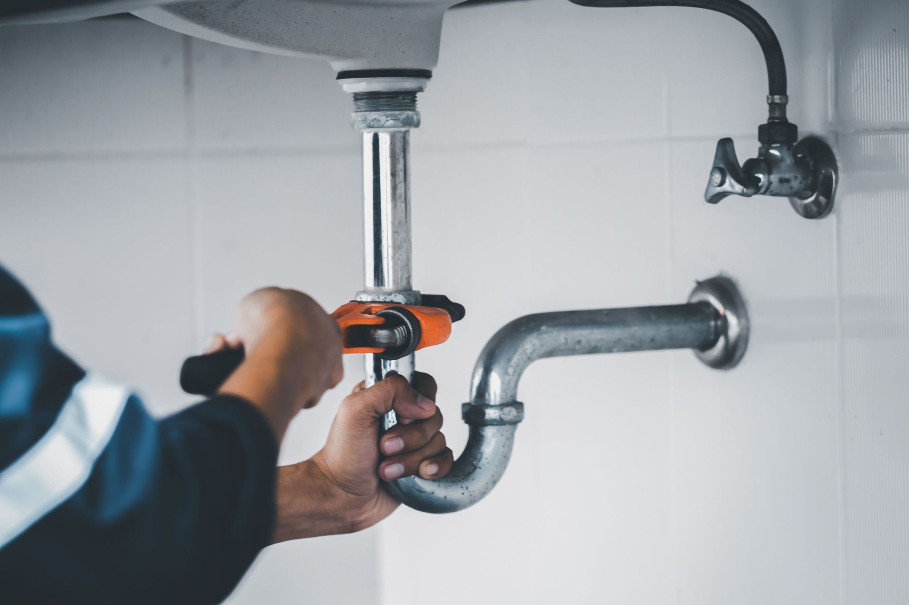

Licensed Plumbing Contractors Serving Richardson, TX
Serving Richardson, TX, since 1987, Speake's Plumbing, Inc. is a trusted name for licensed plumbers in the area. When a pipe bursts near Canyon Creek, a drain backs up along Arapaho Road, or a water heater fails overnight off Custer Parkway, Richardson homeowners need plumbers who know the territory. Call (972) 271-9144 to schedule service or request a free quote.
Richardson sits on the Blackland Prairie, where expansive clay soils shift with every wet and dry cycle, stressing slab foundations and the pipes beneath them. North Texas water, supplied from Lake Lavon and area reservoirs, carries high mineral content that accelerates scale buildup, corrodes older pipes, and shortens water heater life. Speake's has been navigating these conditions in ZIP codes 75080, 75081, and 75082 for nearly four decades.
Plumbing Services Offered in Richardson, TX
- Drain and sewer cleaning, including stubborn kitchen and bathroom clogs.
- Water heater repair and installation, covering gas and electric tank units.
- Pipe repair, repiping, and copper piping for homes with aging infrastructure.
- Fixture replacement, garbage disposals, and toilet repairs or upgrades.
- Sewer line repair, replacement, and video camera inspection.
- Slab leak detection and repair for homes on Blackland Prairie clay foundations.
- Leak detection for hidden wall, ceiling, and underground water lines.
Learn more about residential plumbing services or explore water heater repair and replacement options.
What Plumbing Problems Are Common in Richardson, TX?
Blackland Prairie clay expands when it rains and contracts during droughts, shifting slab foundations and stressing pipes embedded beneath them. Slab leaks often develop gradually, appearing first as unexplained increases in the water bill, warm spots on floors, or the sound of running water when no fixture is in use.
Hard water from Lake Lavon deposits minerals inside tank water heaters, reducing efficiency and accelerating corrosion. Homes built in the 1970s and 1980s in ZIP codes 75080, 75081, and 75082 may also have original galvanized steel pipes now prone to corrosion, reduced flow, and rust-colored water.
Frequently Asked Questions
Do You Send Licensed Plumbers on Every Job in Richardson?
Yes. Speake's Plumbing, Inc. has sent only licensed plumbers on every call since 1987. Licensing protects homeowners and ensures work meets Texas code requirements.
Does Speake's Plumbing Offer Emergency Plumbing Service in Richardson?
Speake's aims to respond promptly to urgent calls throughout Richardson. A plumbing emergency can cause rapid water damage, so getting licensed plumbers on-site quickly is a priority. Call (972) 271-9144 for urgent service.
How Do I Know If I Have a Slab Leak in My Richardson Home?
Common signs include unexplained spikes in your water bill, warm or wet spots on your floor, low water pressure, or the sound of running water when all fixtures are off. Richardson's clay soil increases stress on foundation pipes, making slab leaks a real concern.
How Can I Get a Quote for Plumbing Services in Richardson?
Call (972) 271-9144 or use the contact page to request an estimate. The team explains the scope of work before any job begins, with no obligation to proceed after a diagnosis.
Does Hard Water in Richardson Affect My Water Heater?
Yes. Richardson's water supply carries high mineral content that causes sediment buildup inside tank units, shortening their effective life and reducing efficiency. Learn more on the water heater services page.
